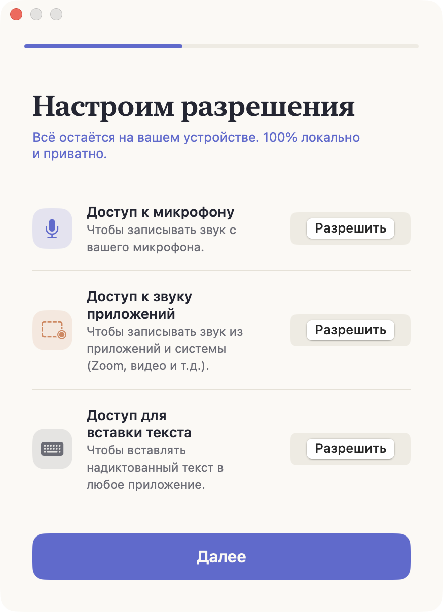
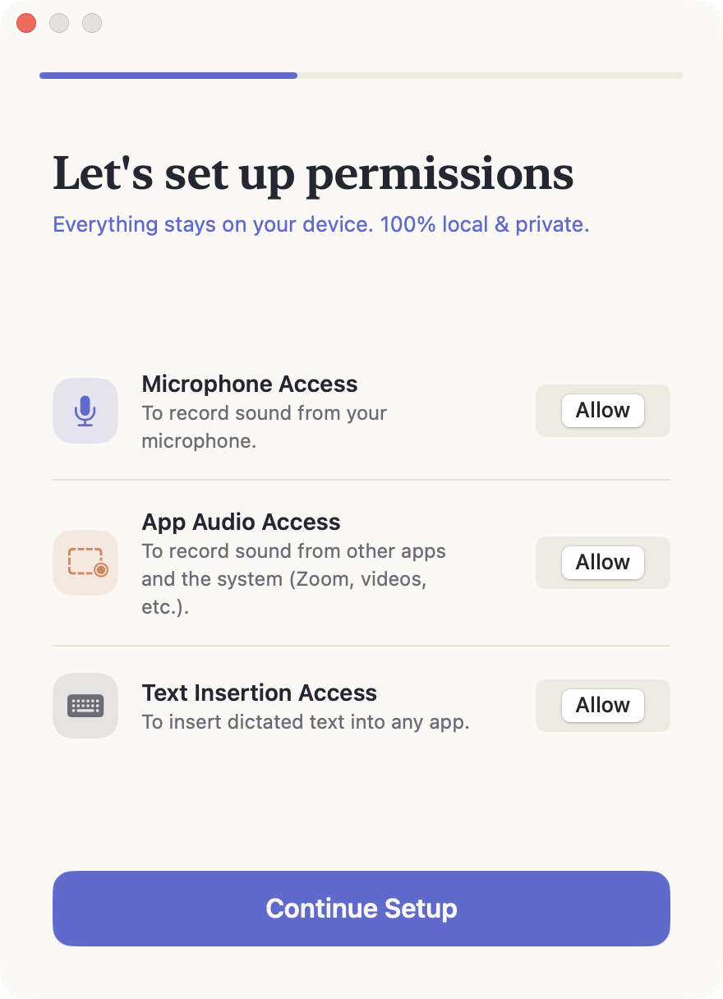

Разрешения macOSmacOS permissions
Heardly просит три разрешения, и каждое отвечает за свою часть работы. Без микрофона не будет диктовки, без системного звука — записи звонков, без универсального доступа текст не вставится в поле.Heardly asks for three permissions, each covering a different part of the job. Without the microphone there is no dictation, without system audio there are no calls, and without accessibility the text cannot be inserted into a field.
Что именно просит HeardlyWhat Heardly asks for
| РазрешениеPermission | Для чегоWhat it does | Без негоWithout it |
|---|---|---|
| МикрофонMicrophone | Слышит ваш голос — и в диктовке, и в звонке.Hears your voice, both in dictation and in a call. | Диктовка не стартует, в звонке записана только другая сторона.Dictation won’t start; in a call only the other side is recorded. |
| Запись системного звукаSystem audio recording | Слышит, что звучит из приложений: собеседников в Zoom, Meet, Telegram.Hears what comes out of apps: the people on the other side of Zoom, Meet or Telegram. | В расшифровке звонка будет только ваша речь.A call transcript will contain only your own speech. |
| Универсальный доступAccessibility | Вставляет продиктованный текст туда, где стоит курсор.Inserts dictated text where your cursor is. | Текст распознается и сохранится в Историю, но в поле не попадёт.The text is still recognised and saved to History, but never reaches the field. |


Где их выдатьWhere to grant them
Heardly спрашивает разрешения сам, когда они впервые нужны. Если вы отказали или случайно закрыли окно, всё включается вручную в «Системных настройках» → «Конфиденциальность и безопасность»:
- Микрофон — найдите Heardly в списке и включите переключатель.
- Запись экрана и системного звука — здесь же живёт доступ к звуку приложений. macOS объединяет их в один пункт.
- Универсальный доступ — отдельный пункт, в нём тоже нужно включить Heardly.
Heardly asks for each permission the first time it needs it. If you declined, or closed the dialog by accident, you can switch them on by hand in System Settings → Privacy & Security:
- Microphone — find Heardly in the list and turn the switch on.
- Screen & System Audio Recording — app audio access lives here; macOS keeps the two together in one entry.
- Accessibility — a separate entry, where Heardly also needs to be enabled.
macOS привязывает разрешение к конкретной сборке приложения. Если после обновления диктовка перестала вставлять текст, загляните в «Универсальный доступ» и включите Heardly заново — подробности на странице Текст не вставляется.macOS ties a permission to a specific build. If dictation stops inserting text after an update, open Accessibility and switch Heardly back on — details on the Text is not inserted page.
Почему просят «запись экрана»Why it says “screen recording”
Это формулировка macOS, а не намерение приложения. Доступ к звуку других программ система выдаёт в том же пункте, что и к изображению экрана, отдельного переключателя под звук в ней нет.
Heardly записывает только звук. Изображение экрана не читается и никуда не передаётся.
That wording comes from macOS, not from the app. The system grants access to other apps’ audio in the same entry as the screen image; it has no separate switch for audio alone.
Heardly records audio only. The screen image is never read and never sent anywhere.